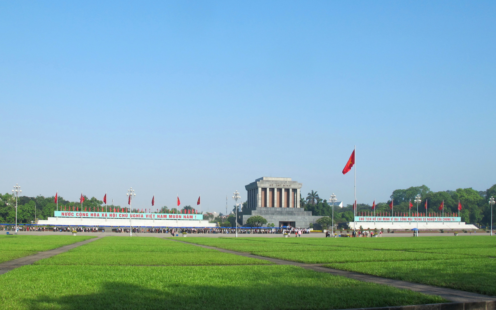
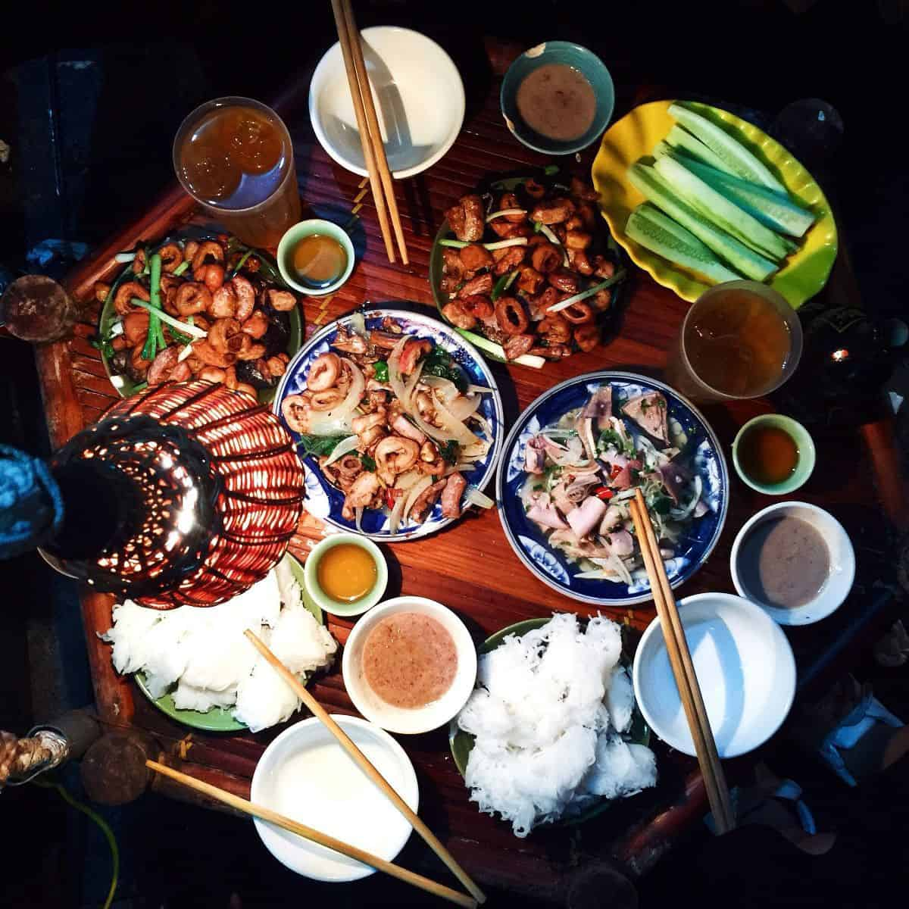

Một số địa điểm du lịch nổi tiếng tại Hà Nội

Các địa điểm du lịch Hà Nội không chỉ có những di tích lịch sử quan trọng mà nơi này còn có những danh lam thắng cảnh tuyệt đẹp, đầy thi vị, đủ cho bạn khám phá một Hà Nội vừa bình dị nhưng cũng sống động, đầy màu sắc. Hãy cùng khám phá vẻ đẹp văn hoá cùng sự trẻ trung, nhộn nhịp của Thủ đô nhé!
MỤC LỤC
2.
Hồ Gươm12.
Chùa Một Cột14.
Ga Hà Nội1. Quảng trường Ba Đình – Lăng Bác
Nếu đã đặt chân tới mảnh đất ngàn năm văn hiến thì Lăng Bác – Quảng trường Ba Đình là địa điểm du lịch ở Hà Nội mà các bạn không thể bỏ qua. Nơi đây là trung tâm chính trị của Việt Nam với nhà Quốc hội, Phủ Chủ tịch, Bảo tàng Hồ Chí Minh,…
Lăng Bác là nơi lưu giữ thi hài của vị lãnh tụ kính yêu. Bên ngoài lăng là những hàng tre xanh bát ngát. Lăng chủ tích mở cửa vào sáng thứ 3,4,5,7 và chủ nhật. Khi vào viếng lăng Bác, bạn chú ý ăn mặc chỉnh tề, không đem theo các thiết bị điện tử ghi hành và giữ trật tự trong lăng.
Quảng trường Ba Đình là quảng trường lớn nhất Việt Nam, nằm trên đường Hùng Vương và trước Lăng Chủ tịch Hồ Chí Minh. Quảng trường này còn là nơi ghi nhận nhiều dấu ấn quan trọng trong lịch sử Việt Nam. Đặc biệt, vào ngày 2 tháng 9 năm 1945, Chủ tịch Chính phủ Cách mạng lâm thời Việt Nam Dân chủ Cộng hòa Hồ Chí Minh đã đọc bản Tuyên ngôn độc lập khai sinh ra nước Việt Nam Dân chủ Cộng hòa. Đây cũng là nơi diễn ra các cuộc diễu hành nhân dịp các ngày lễ lớn của Việt Nam, và cũng là một địa điểm tham quan, vui chơi, dạo mát của du khách và người dân Hà Nội.
2. Hồ Gươm
Hồ Gươm hay hồ Hoàn Kiếm là một trong những nơi nên đến ở Hà Nội khi du lịch thủ đô. Nằm ở giữa trung tâm, Hồ Gươm được ví như trái tim của thành phố ngàn năm tuổi này.. Mặt hồ như tấm gương lớn soi bóng những cây cổ thụ, những rặng liễu thướt tha tóc rủ, những mái đền, chùa cổ kính, tháp cũ rêu phong, các toà nhà mới cao tầng vươn lên trời xanh.

Buổi sáng những người dân Hà Nội thường đến Hồ Gươm để tập thể dục như một nét văn hoá riêng đặc trưng của Thủ đô. Ảnh: Đinh Tuấn Văn
Một trải nghiệm thú vị dành cho khách du lịch là đi bộ một vòng hồ, bạn sẽ được thấy một Hà Nội cổ kính nhưng vẫn đầy hiện đại hiện lên thật rõ ràng. Bên cạnh hồ là những công trình kiến trúc như tháp Bút, đài Nghiên, cầu Thê Húc dẫn vào đền Ngọc Sơn, đền vua Lê Thái Tổ, tháp Hoà Phong,…
3. Phố cổ Hà Nội – địa điểm du lịch hấp dẫn
Muốn tìm hiểu về cuộc sống, văn hóa và con người Tràng An thì bạn đừng bỏ qua phố cổ – một trong những địa điểm du lịch ở Hà Nội đầy thú vị và hấp dẫn với du khách. Phố cổ Hà Nội nằm ở phía Tây và phía Bắc của Hồ Hoàn Kiếm, là nơi tập trung đông dân cư sinh sống có 36 phố phường. Mỗi con phố ở đây chủ yếu tập trung bán một loại mặt hàng nhất định.

Lang thang ở khu phố và thưởng thức ẩm thực phố cổ như phở Bát Đàn, chả cá Lã Vọng, bún chả hàng Mành, mì vằn thắn Đinh Liệt, bún ốc nguội Ô Quan Chưởng,…sẽ khiến chuyến đi của bạn đáng nhớ hơn rất nhiều!
4. Văn Miếu – Quốc Tử Giám
Nếu kể tên các địa điểm du lịch Hà Nội bậc nhất xưa và nay có lẽ ai cũng sẽ nghĩ ngay đến Văn Miếu Quốc Tử Giám. Đây là một quần thể kiến trúc văn hoá hàng đầu và là niềm tự hào của người dân Thủ đô khi nhắc đến truyền thống ngàn năm văn hiến của Thăng Long – Đông Đô – Hà Nội.
Văn Miếu quốc tử giám là điểm đến của nhiều học sinh, sinh viên mỗi kỳ thi quan trọng để cầu may.
Văn Miếu Quốc Tử Giám được xem là biểu tượng của tri thức, của nền giáo dục Việt Nam. Đây là nơi thờ phụng các bậc Tiên thánh, Tiên sư của đạo Nho và Tư nghiệp Quốc Tử Giám Chu Văn An – người thầy tiêu biểu về đạo cao, đức trọng của nền giáo dục Việt Nam.
5. Nhà thờ lớn Hà Nội
Nằm ở 40 phố Nhà Chung, phường Hàng Trống, Nhà thờ lớn là một trong những điểm đến thú vị ở Hà Nội, nơi lui tới không chỉ của các tín đồ theo đạo mà còn là địa điểm quen thuộc của giới trẻ, khách du lịch tứ phương. Nhà thờ được thiết kế theo phong cách kiến trúc Gothic trung cổ châu Âu với bức tường xây cao, có mái vòm và nhiều cửa sổ.
Bên trong nhà thờ, khu cung thánh chạm trổ hoa văn bằng gỗ sơn son thiếp vàng kết hợp với hệ thống tranh Thánh bằng kính màu. Cảm giác như được đứng trong một lâu đài cổ kính cùng điệu nhạc cổ điển, chắc hẳn bạn đang rất muốn thử phải không.
6. Chùa Trấn Quốc
Chùa Trấn Quốc là một trong những ngôi chùa cổ nhất ở Hà Nội và Việt Nam, nằm trên một bán đảo phía Nam của Hồ Tây, ở gần cuối đường Thanh Niên, quận Ba Đình, Hà Nội. Từng là trung tâm Phật giáo của kinh thành Thăng Long vào thời Lý và thời Trần với những giá trị về lịch sử và kiến trúc, chùa Trấn Quốc nổi tiếng là chốn cửa Phật linh thiêng, là điểm thu hút rất nhiều tín đồ Phật tử, khách tham quan, du lịch trong và ngoài nước.
Đầu năm 2017, chùa Trấn Quốc được lọt vào danh sách 16 ngôi chùa đẹp nhất thế giới do báo Daily Mail (Anh) bình chọn. Hãy ghé thăm chùa Trấn Quốc, đảm bảo bạn sẽ ngạc nhiên trước không gian tĩnh lặng, vẻ đẹp nên thơ của “đóa sen” nổi trên mặt nước hồ Tây.
7. Hồ Tây – điểm du lịch Hà Nội thú vị
Hồ Tây một trong những danh thắng nổi tiếng của thủ đô Hà Nội, đây được coi là một “sân khấu khổng lồ soi bóng mây trời và cảnh quan thành phố”. Khung cảnh ven hồ Tây vô cùng thi vị, mơ mộng. Bao quanh hồ là những hàng cây xanh cao thẳng tắp, rồi những bồn hoa , thềm cỏ xanh mướt mọc xung quanh đã tạo ra một khung cảnh đặc biệt cho hồ Tây.

Cái làm nên nét đặc biệt cho Hồ Tây, phân biệt nó với các hồ khác ở Hà Nội không chỉ là khung cảnh mà còn là sắc nước. Sắc nước mỗi mùa đều có sự thay đổi một cách kì diệu và ngoạn mục theo thời tiết, lúc xanh, lúc xám, rồi khi sáng khi tối… Và khung cảnh Hồ Tây trở nên rực rỡ thăng hoa nhất có lẽ là vào khoảnh khắc cuối ngày- khi ánh hoàng hôn buông xuống bao phủ lên cảnh vật,cùng cái mờ ảo của ánh đèn đường hắt xuống mặt nước tạo nên một khung cảnh cực kì huyền ảo, lãng mạn.
Dọc đường Hồ Tây cũng có rất nhiều hàng quán ăn vặt ngon, rất thích hợp cho chuyến dạo mát bờ hồ của bạn cùng hội cạ cứng. Đặc biệt là khách du lịch lần đầu đến Hà Nội càng nên thưởng thức các món ăn như bánh rán mặn, phở cuốn, lòng nướng vv..
8. Nhà hát lớn Hà Nội
Nằm ở số 1 Tràng Tiền, Nhà hát lớn là một trong các địa điểm du lịch đẹp ở Hà Nội mang nhiều dấu ấn lịch sử. Đây là địa điểm tổ chức những chương trình nghệ thuật lớn của nhiều ca sĩ, nghệ sĩ tên tuổi hàng đầu Việt Nam. Du khách có thể chiêm ngưỡng kiến trúc tuyệt vời của Nhà hát Lớn hay mua vé vào xem một trong những chương trình biểu diễn thường xuyên được tổ chức để có thể tận mắt thấy được hết nội thất tráng lệ của nhà hát.
9. Nhà tù Hỏa Lò
Nhà tù Hỏa Lò được thực dân Pháp xây dựng từ năm 1896 với tên gọi “Maison Central”, là nơi giam giữ những chiến sĩ cách mạng chống lại chế độ thực dân. Đây là một trong những công trình kiên cố vào loại bậc nhất Đông Dương khi đó. Sau ngày giải phóng thủ đô, nhà tù được đặt dưới quyền của chính quyền cách mạng. Từ năm 1963 đến 1975, nơi đây còn được sử dụng để làm nơi giam giữ những phi công Mỹ bị quân đội Việt Nam bắn rơi trong cuộc chiến tranh phá hoại miền Bắc.
Ngày nay nhà tù Hỏa Lò trở thành di tích lịch sử đặc biệt với nhiều tư liệu quý giá được trưng bày và giữ gìn cẩn thận, thu hút hàng ngàn du khách trong và ngoài nước tới tham quan mỗi năm.
10. Hoàng thành Thăng Long
Hoàng thành Thăng Long là quần thể di tích gắn liền với sự phát triển của Thăng Long – Hà Nội, được các triều vua xây dựng trong nhiều giai đoạn lịch sử. Đây cũng là di tích quan trọng bậc nhất trong hệ thống các di tích lịch sử của Việt Nam. Đến Hoàng thành Thăng Long du khách có thể tham quan những địa điểm nổi bật như khu khảo cổ học số 18 Hoàng Diệu, Đoan Môn, Điện Kính Thiên, Bắc Môn (thành Cửa Bắc)…

11. Cột cờ Hà Nội
Kỳ đài Hà Nội hay còn được nhiều biết tới hơn với tên gọi Cột cờ Hà Nội nằm trong khuôn viên của bảo tàng lịch sử quân sự Việt Nam. Được đánh giá là công trình nguyên vẹn và hoành tráng nhất trong quần thể di tích Hoàng thành Thăng Long, Cột Cờ chính là điểm tham quan du lịch ở Hà Nội mà du khách không thể bỏ qua trong hành trình khám phá lịch sử của đất Hà Thành.
12. Chùa Một Cột
Chùa Một Cột được xây dựng năm 1049 dưới triều đại nhà Lý, là một trong những biểu tượng của thủ đô Hà Nội bên cạnh tháp Rùa và Khuê Văn Các. Bên cạnh ý nghĩa về tâm linh thì chùa Một Cột là công trình kiến trúc độc đáo có tính thẩm mỹ cao, được thể hiện qua nghệ thuật tạo hình trên mặt nước, điêu khắc, hội họa… phản ánh giá trị văn hóa cổ xưa cũng như mang đậm tính dân tộc.

13. Cầu Long Biên
Nhắc đến những địa điểm du lịch Hà Nội thì không thể không kể tới cầu Long Biên. Cầu được Pháp xây dựng từ năm 1898, là cây cầu thép đầu tiên bắc qua sông Hồng. Cầu Long Biên gắn liền với hai cuộc kháng chiến chống Pháp và chống Mỹ của dân tộc, được coi là biểu tượng của Hà Nội trong những năm tháng khó khăn vất vả.

Những giá trị quá khứ như vẫn còn lắng đọng trong từng nhịp cầu, vì thế trong lòng nhiều người Hà Nội cầu Long Biên là một phần kí ức không thể xóa nhòa.
14. Ga Hà Nội
Ga Hà Nội có tên gọi ban đầu là ga Hàng Cỏ, được người Pháp xây dựng và khánh thành vào năm 1902. Hơn một thế kỷ qua, ga Hà Nội vẫn luôn là một đầu mối giao thông quan trọng của cả nước cũng như của thủ đô.
Nếu bạn đến Hà Nội hãy chọn cho mình những khách sạn gần khu vực trung tâm và các khu du lịch, được trang bị đầy đủ tiện nghi và không thể thiếu các dòng nệm cao cấp như nệm foam để cho bạn giấc ngủ thật êm ái sau một ngày khám phá thủ đô nhé.
15. Chợ Đồng Xuân – địa điểm tham quan ở Hà Nội không thể bỏ qua
Chợ Đồng Xuân là một trong những chợ lớn nhất ở Hà Nội. Nơi đây bán rất nhiều mặt hàng đa dạng từ thực phẩm, may mặc cho tới đồ tiêu dùng phù hợp với nhiều sở thích cũng như các đối tượng khác nhau. Vì là chợ đầu mối, thế nên các mặt hàng ở đây cũng rẻ hơn so với những nơi khác. Đừng quên lựa chọn cho mình một vài món đồ lưu niệm khi tới đây tham quan nhé.
Chợ Đồng Xuân còn là địa điểm bán rất nhiều đồ ăn ngon hấp dẫn đặc trưng của Hà Nội, nếu có dịp đến đây bạn đừng quên thưởng thức nhé!